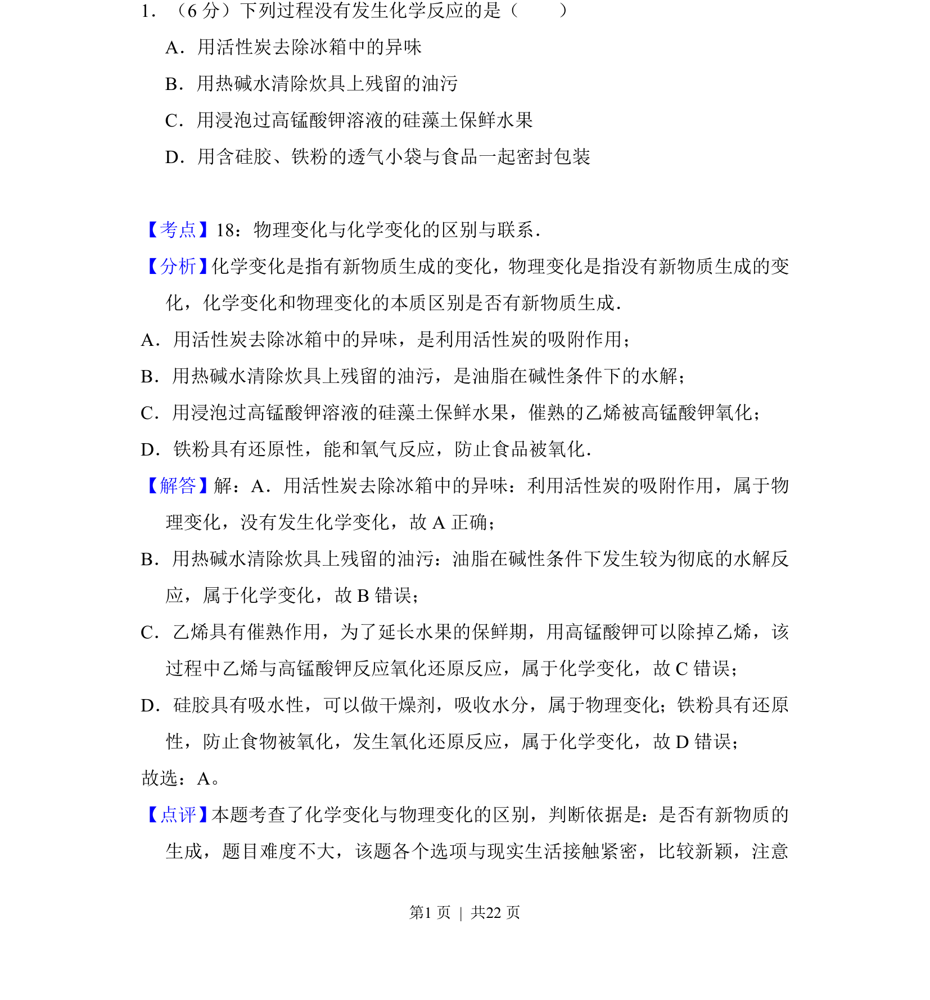
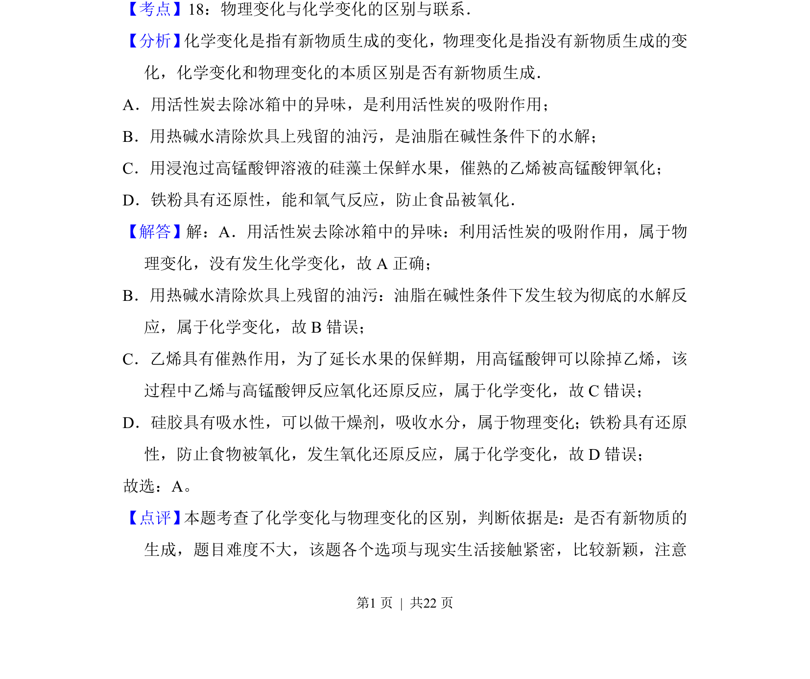

考点：物理变化 化学变化 化学反应判断

本题通过生活实例考查物理变化与化学变化的本质区别，判断是否有新物质生成。

📄 原 PDF 第 1 页：
素材/真题/吉林/2008-2024·（吉林）化学高考真题/2014年高考化学试卷（新课标Ⅱ）（解析卷）.pdf
1．（6分）下列过程没有发生化学反应的是（ ） A．用活性炭去除冰箱中的异味 B．用热碱水清除炊具上残留的油污 C．用浸泡过高锰酸钾溶液的硅藻土保鲜水果 D．用含硅胶、铁粉的透气小袋与食品一起密封包装
【考点】18：物理变化与化学变化的区别与联系．菁优网版权所有 【分析】 化学变化是指有新物质生成的变化，物理变化是指没有新物质生成的变 化，化学变化和物理变化的本质区别是否有新物质生成． A．用活性炭去除冰箱中的异味，是利用活性炭的吸附作用； B．用热碱水清除炊具上残留的油污，是油脂在碱性条件下的水解； C．用浸泡过高锰酸钾溶液的硅藻土保鲜水果，催熟的乙烯被高锰酸钾氧化； D．铁粉具有还原性，能和氧气反应，防止食品被氧化． 【解答】解：A．用活性炭去除冰箱中的异味：利用活性炭的吸附作用，属于物 理变化，没有发生化学变化，故A正确； B．用热碱水清除炊具上残留的油污：油脂在碱性条件下发生较为彻底的水解反 应，属于化学变化，故B错误； C．乙烯具有催熟作用，为了延长水果的保鲜期，用高锰酸钾可以除掉乙烯，该 过程中乙烯与高锰酸钾反应氧化还原反应，属于化学变化，故C错误； D．硅胶具有吸水性，可以做干燥剂，吸收水分，属于物理变化；铁粉具有还原 性，防止食物被氧化，发生氧化还原反应，属于化学变化，故D错误； 故选：A。 【点评】 本题考查了化学变化与物理变化的区别，判断依据是：是否有新物质的 生成，题目难度不大，该题各个选项与现实生活接触紧密，比较新颖，注意